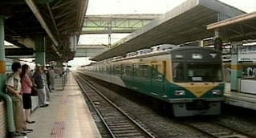

2003-12-19 14:04:02 우리나라 말은 참 길다 전철역이나 전철 내에서 들을 수 있는 방송 멘트다."우리역은 전동차와 승강장 사이가 넓습니다. 하객의 발이 빠질 염려가 있사오니 조심하여 주시기 바랍니다."그리고 뒤따르는 영문 멘트."Please. Watch your step."왜 이럴까?아마도 우리말은 짧게 하면 공손해보이지 않기 때문인것 같다.영어는 의미 전달에 주력하는듯 하고...